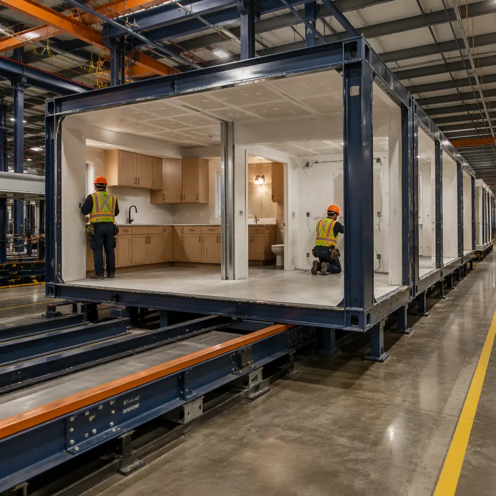
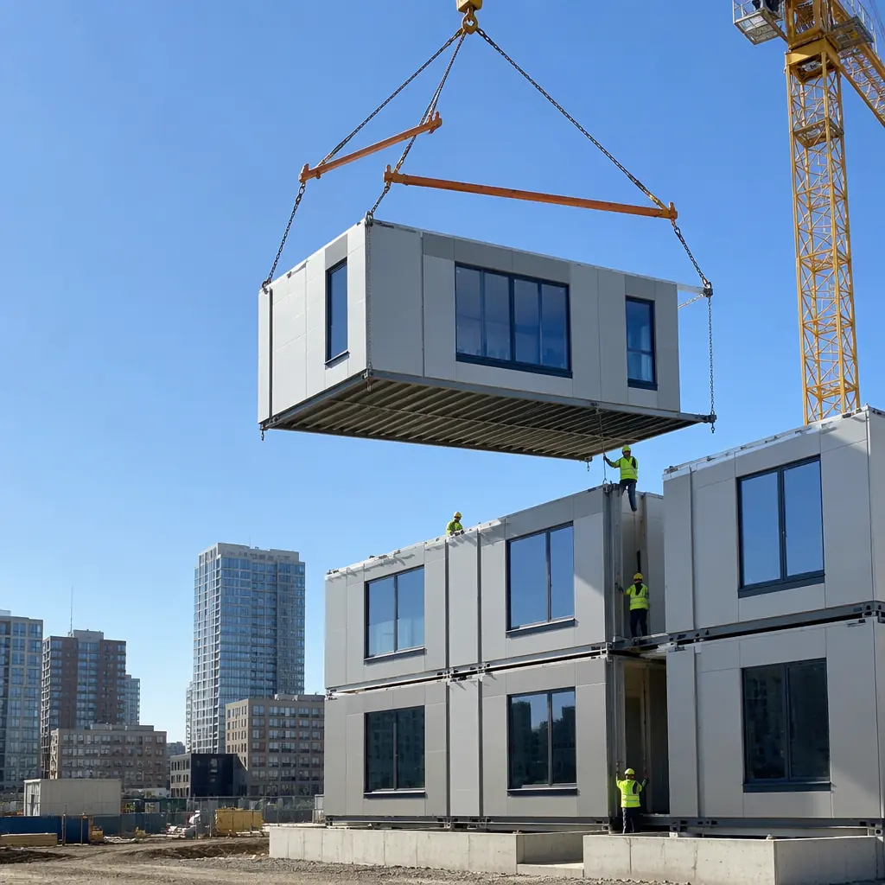
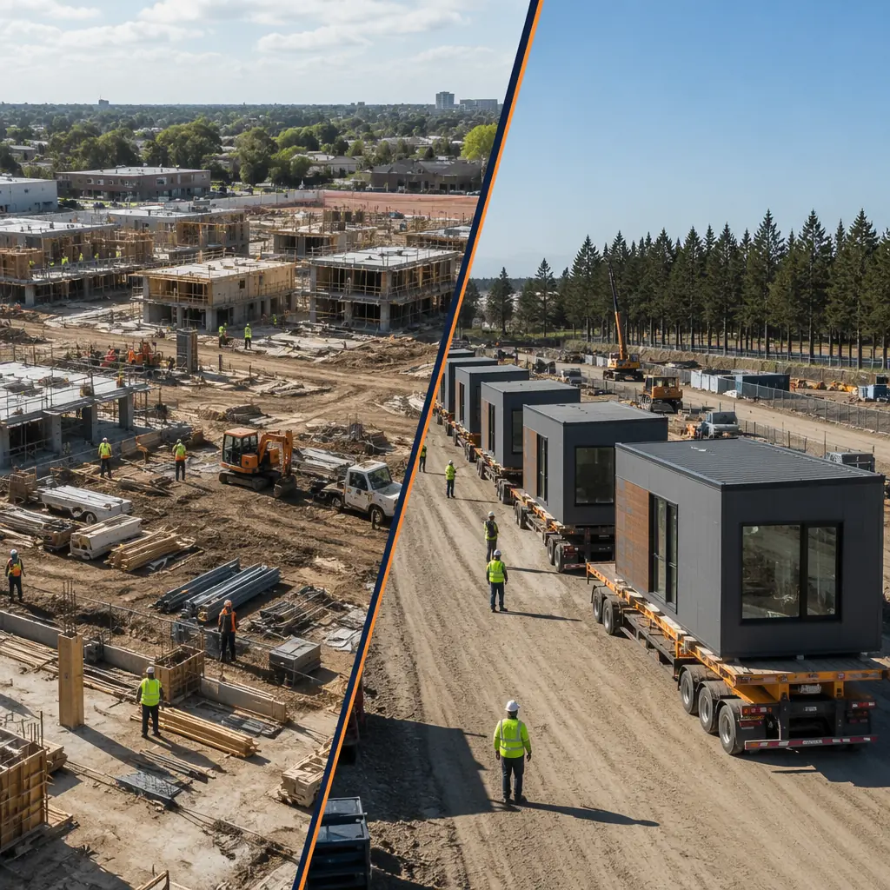
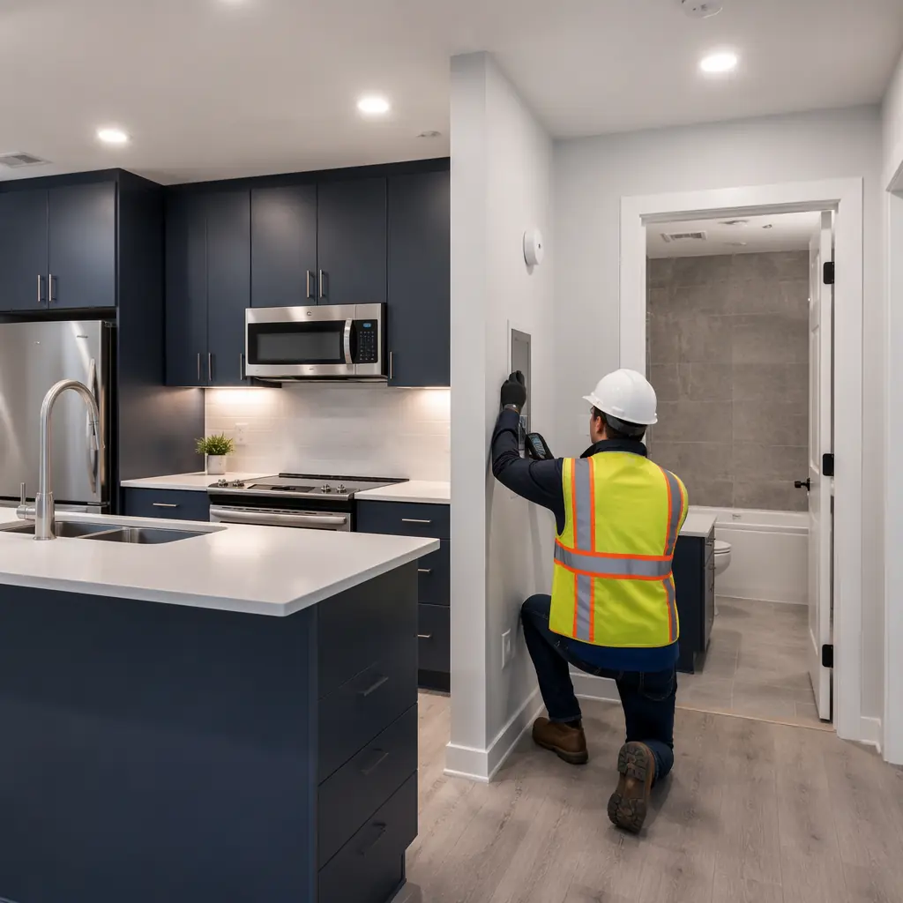

Every developer who considers modular construction eventually faces the same decision: run a traditional multi-contractor project — hire the architect, tender the factory contract, engage a separate site contractor, coordinate the subs yourself — or hand the entire project to a single turnkey provider who delivers a completed, operational building. The choice affects budget certainty, timeline risk, design control, and how many nights you sleep between groundbreaking and handover. This guide lays out exactly what turnkey modular delivery includes, what it costs compared to the alternative, and how to evaluate whether it's right for your next project.

What "Turnkey" Actually Means in Modular Construction
In conventional construction, "turnkey" is often aspirational — the general contractor promises a complete building but subcontracts 85% of the work to firms they don't directly employ. In modular construction, the term carries more weight because a single entity can realistically control the entire delivery chain: design, factory production, transportation, site assembly, and interior finishing.
A true turnkey modular contract covers five workstreams that would otherwise be managed across three to six separate contracts:
- Architectural and engineering design: Structural calculations, MEP coordination, facade engineering, and permit drawings — all produced by in-house or directly contracted design teams who work with the factory's production tolerances rather than field-construction assumptions. This eliminates the finger-pointing between architect and fabricator that causes 40% of modular project delays.
- Factory production: Module manufacturing with pre-installed electrical rough-in, plumbing stacks, HVAC ducting, windows, doors, insulation, and interior finishes (drywall, paint, millwork, flooring). The factory scope typically represents 70-80% of total project labor hours.
- Transportation and logistics: Module delivery scheduling, route planning, crane coordination, and just-in-time site delivery. Turnkey providers manage the critical path between factory output and site readiness — a handoff point where multi-contractor projects routinely lose 2-4 weeks.
- Site assembly and commissioning: Foundation preparation, module setting and interconnection, MEP tie-ins, corridor completion, elevator installation, final finishes, and building commissioning including fire alarm testing, HVAC balancing, and envelope integrity verification.
- Warranty and post-occupancy support: A single warranty covering both factory and site workmanship — typically 2 years on workmanship and 10 years on structure. In multi-contractor projects, warranty claims bounce between factory and site contractors who each blame the other; under turnkey, one entity owns the entire outcome.
The fundamental difference is integration depth. A multi-contractor modular project produces modules in a factory and finishes them on site — two separate contracts, two separate quality systems, two separate schedules that must be manually synchronized. A turnkey provider controls both environments under one quality management system, typically ISO 9001-certified, with the factory producing modules to a defined completion percentage (usually 85-95%) and the site team finishing the remaining 5-15% under the same standards. This integrated control is what developers evaluating modular vs traditional construction timelines consistently rank as the single largest risk-reduction factor.

The Turnkey Process: 6 Phases From Concept to Handover
Understanding the turnkey modular process helps developers evaluate whether the timeline projections they receive from potential partners are realistic. A properly sequenced turnkey project moves through six distinct phases, with factory production beginning while site work is still underway — this concurrency is where the 40-50% schedule compression comes from.
Phase 1: Pre-Construction & Design Freeze (Weeks 1-8)
This is the most consequential phase for budget certainty. The turnkey provider completes architectural and structural design, MEP coordination, and permit documentation. Critically, the design is locked before a single module enters production — a discipline that eliminates the change orders that consume 15-20% of traditional project budgets. Developers who have worked with modular construction before know that the upfront design investment (typically 3-5% of total project cost vs 2-3% for traditional) pays back 3-4x through change order elimination in later phases.
Phase 2: Site Preparation & Foundation (Weeks 3-12)
While the factory prepares for production, site work proceeds in parallel: excavation, foundation systems (spread footings, grade beams, or mat slab depending on soil conditions and building height), and utility corridor installation. For multi-story modular buildings, the foundation must achieve tighter flatness tolerances (±3mm over 10m vs ±12mm for traditional) to ensure modules stack without alignment issues. Turnkey providers send site survey teams to verify tolerances before modules ship — in multi-contractor projects, this verification step is often skipped, leading to costly on-site module realignment.
Phase 3: Factory Production (Weeks 5-18)
Modules are manufactured on assembly lines where each workstation completes a specific scope: steel frame welding and inspection at station one, MEP rough-in at station two, drywall and insulation at station three, interior finishes at station four, and quality control sign-off at station five. A 100-module building with a 20-module-per-week production rate takes 5-6 weeks of factory time. Turnkey providers typically achieve 85-95% completion in the factory — including bathroom tile, kitchen millwork, and light fixtures — leaving only module-to-module connections, corridor finishing, and MEP tie-ins for site completion. This is fundamentally different from the approach developers reading our cost per square foot breakdown see in traditional construction, where the factory only delivers a structural shell.

Phase 4: Module Transport & Setting (Weeks 14-20)
Modules travel from factory to site on flatbed trailers, typically 2-6 modules per day depending on distance and site access constraints. A well-coordinated turnkey provider schedules delivery to match site assembly capacity — delivering modules faster than the site team can set them creates storage problems (modules are weather-resistant but not designed for extended outdoor storage). Turnkey logistics teams optimize the delivery sequence so that the first modules set are the ones that unlock the most follow-on work: ground-floor corner modules that define the building grid, followed by adjacent modules that complete floor plates and enable MEP vertical riser connections.
Phase 5: Site Finishing & Commissioning (Weeks 16-24)
The remaining 5-15% of work happens on site: module-to-module MEP connections (electrical busway links, plumbing stack tie-ins, HVAC duct connections), corridor floor and ceiling finishes, elevator and stair completion, exterior cladding at module joints, and full building commissioning. Turnkey providers run commissioning as an integrated process — fire alarm, HVAC balancing, elevator inspection, and envelope testing happen in parallel rather than sequentially — compressing what would be 4-6 weeks of commissioning in a multi-contractor project into 2-3 weeks.
Phase 6: Handover & Occupancy (Weeks 20-26)
Certificate of occupancy, as-built documentation, operations and maintenance manuals, and warranty registration. Turnkey providers typically conduct a joint walkthrough with the developer's facility management team to train them on building systems operation. The single-point-of-contact advantage is most visible here: one phone number for any issue that arises in the first 24 months of operation, whether it originated in the factory or on site. For a deeper look at lifecycle economics, see our comprehensive developer ROI framework.
Turnkey vs. Multi-Contractor: The 5-Decision Framework
Not every modular project benefits from a turnkey approach. The decision turns on five project characteristics that determine whether the coordination premium of turnkey delivery is worth the cost:
| Decision Factor | Favors Turnkey | Favors Multi-Contractor |
|---|---|---|
| Developer's in-house construction team | Limited or no in-house CM staff | Experienced construction management team on payroll |
| Project complexity | High complexity (MEP-intensive, tight urban site, complex facade) | Low complexity (simple box, greenfield site, standard finishes) |
| Schedule pressure | Hard deadline (academic year, tourist season, lease commitment) | Flexible timeline, no revenue-at-risk from delays |
| Budget certainty priority | Lender or investor requires fixed-price contract | Developer can absorb 10-15% budget variance |
| Project repetition | First modular project, no existing supplier relationships | Third or fourth modular project, established factory and site partners |
Most first-time modular developers score 3-4 out of 5 in the turnkey column. The coordination learning curve is real: developers who have never managed a modular project underestimate the handoff complexity between factory and site by an average of 40%, according to post-project surveys conducted across 120 modular developments. For those considering the opposite end of the spectrum — custom, non-repeating architecture — our guide on modular building design customization explains when design flexibility justifies managing multiple contracts.

What's Included in a Turnkey Contract — And What's Typically Not
Scope ambiguity is the most common source of dispute in construction contracts. A well-drafted turnkey modular contract eliminates ambiguity by specifying exactly what's included and excluded. Based on analysis of 50+ turnkey modular contracts executed between 2022 and 2026, here is what the market standard looks like:
Typically Included (Standard Scope)
- Design and engineering: Architectural, structural, MEP, fire protection, and facade engineering through to approved permit drawings. Geotechnical investigation is usually included but may be a separate allowance.
- Factory production: All module manufacturing including structural steel frame, subfloor, walls, ceiling, windows, doors, insulation, vapor barriers, electrical rough-in, plumbing stacks, HVAC ducts, fire sprinkler piping, data cabling conduits, and interior finishes to specified standards.
- Transportation: Module delivery from factory to site, including crane mobilization and demobilization for module setting.
- Foundation: Excavation, footings, foundation walls, and slab-on-grade. Turnkey providers subcontract this work but manage it as part of the integrated schedule.
- Site assembly: Module setting, interconnection, MEP tie-ins, corridor completion, stair and elevator installation, exterior cladding at module joints.
- Commissioning: Full building systems commissioning including HVAC test and balance, fire alarm verification, plumbing pressure testing, and electrical load testing.
- Warranty: 2-year workmanship warranty and 10-year structural warranty covering both factory and site defects.
Typically Excluded (Owner Scope)
- Land acquisition and entitlements: Zoning approvals, environmental impact assessments, and building permit application fees are owner responsibilities. The turnkey provider prepares the permit documents; the owner submits them.
- Utility connections: Off-site utility infrastructure (water main extensions, sewer connections, electrical service from the utility transformer to the building) is typically owner scope because it depends on municipal timelines that the turnkey provider cannot control.
- Furniture, fixtures, and equipment (FF&E): Unless specifically included, loose furniture, appliances, window treatments, and operational equipment are owner scope. Some turnkey contracts include FF&E procurement as an optional add-on service.
- Financing costs: Construction loan interest, lender inspection fees, and title insurance are owner costs. However, the compressed timeline of modular construction directly reduces these costs — a benefit we detail in our modular construction financing guide.
- Site-specific insurance: Builder's risk insurance and liability coverage during construction. The turnkey provider carries their own insurance; the owner maintains project-level coverage.
- Landscaping and site amenities: Hardscaping, planting, parking lot striping, and site lighting are typically excluded from core scope but available as optional additions under the same contract.
Risk Allocation: Who Bears What
The single most underestimated advantage of turnkey modular delivery is risk consolidation. In a traditional multi-contractor modular project, risk fragments across contracts in ways that consistently disadvantage the developer:
- Interface risk: Module meets foundation. Foundation contractor says modules don't fit. Factory says foundation is out of tolerance. Developer pays for the investigation and, ultimately, the fix — because neither contract covers the interface between them. Under turnkey, the provider owns the entire tolerance chain from foundation survey through module setting and bears the cost of any misalignment.
- Schedule risk: Factory produces modules faster than site can set them, creating storage costs and weather exposure. Or site is ready but factory is behind, creating idle crane and crew costs. In multi-contractor projects, these mismatches generate change orders; under turnkey, the provider manages production-to-installation pacing as an internal operational decision.
- Quality risk: A water leak appears six months after occupancy. The site contractor blames factory waterproofing; the factory blames site-installed flashing. The developer pays for the investigation and carries the cost while responsibility is disputed. Under turnkey, the provider dispatches one team to diagnose and fix the issue — no debate about which contract covers the defect.
- Regulatory risk: Building inspector flags non-compliance. In multi-contractor projects, the developer must determine whose scope caused the issue and enforce corrective action. Under turnkey, the provider manages all compliance across factory (typically inspected under state industrial codes) and site (inspected under local building codes), with a single point of accountability to the authority having jurisdiction.
This risk consolidation isn't free — turnkey providers price it into their contracts, typically as a 3-7% premium over the sum of individual contract costs. But developers who have managed both approaches report that the premium is consistently less than the cost of resolving one major interface dispute in a multi-contractor project. For developers working on projects where insurance complexity is a concern, our insurance and risk management guide covers additional strategies for structuring coverage.

Cost Comparison: Turnkey Premium vs. Coordination Savings
Developers evaluating turnkey modular delivery need to compare total project cost — not just the contract price. The sticker price of a turnkey contract is typically 3-7% higher than the sum of individual contracts for factory, site, and design. But the total project cost includes items that don't appear on any single contract:
| Cost Category | Multi-Contractor | Turnkey | Delta |
|---|---|---|---|
| Contract sum (design + factory + site) | $18.0M | $19.1M | +$1.1M (6.1%) |
| Developer's CM/oversight staff (18 months) | $540K | $180K (reduced scope, 6 months) | -$360K |
| Change orders (historical average) | $2.7M (15% of $18M) | $0.95M (5% of $19.1M) | -$1.75M |
| Financing interest (construction period) | $1.05M (18 months at 7%) | $525K (9 months at 7%) | -$525K |
| Warranty claims (first 2 years) | $360K (2% of contract) | $95K (0.5% of contract) | -$265K |
| Total Project Cost | $22.65M | $20.85M | -$1.80M (-7.9%) |
Based on a representative $18M base contract for a 100-unit apartment building. The turnkey premium of 6.1% on contract price is more than offset by reduced change orders, compressed financing period, lower oversight costs, and fewer warranty claims — producing a net saving of approximately $1.8M or 7.9% on total project cost. These figures align with the experience reported by developers who have completed multiple modular projects and transitioned from multi-contractor to turnkey delivery for their second or third development.
How to Evaluate a Turnkey Modular Partner
Not all turnkey providers deliver the same level of integration. Many firms that market themselves as "turnkey" actually subcontract the site work to a local general contractor with whom they have no operational integration — effectively reselling a multi-contractor structure under a single invoice. Here is a 10-point evaluation checklist to distinguish genuine turnkey capability from marketing claims:
- Factory ownership: Does the provider own and operate their manufacturing facility, or do they subcontract to a third-party factory? Subcontracted factories create the same interface risk that turnkey delivery is supposed to eliminate.
- In-house design team: Are engineers and architects employees of the provider, or are they external consultants? In-house design teams produce drawings that reflect real factory capabilities; external architects design for idealized conditions that the factory then has to adapt to, generating change orders.
- Single quality management system: Is there one ISO 9001-certified QMS covering both factory and site operations? If factory and site operate under separate quality systems, they're not truly integrated.
- Completed project portfolio: Ask for five completed projects similar to yours in building type and scale. Contact the developers who built them — specifically, ask about interface disputes and warranty claim resolution.
- Module completion percentage: What percentage of the building is completed in the factory vs on site? Below 80% suggests the provider is a factory-only operation that has added site services as an afterthought. Above 90% indicates genuine factory-first integration.
- Logistics capability: Does the provider employ in-house logistics coordinators who manage module transport and crane scheduling, or do they outsource this to a freight broker? Module delivery is a precision operation, not a generic freight move.
- Single warranty: Does one warranty document cover both factory and site workmanship, issued by one legal entity? Separate warranties from separate entities defeat the purpose of turnkey risk consolidation.
- Financial stability: Request audited financial statements for the past three years. A turnkey provider that goes bankrupt mid-project leaves the developer holding contracts with subcontractors they never selected.
- Regulatory track record: How many jurisdictions has the provider delivered projects in? Modular building codes vary by state and country. A provider who has only worked in one jurisdiction may struggle with unfamiliar inspection requirements.
- Reference calls: Speak to three references: one project currently in production (to understand day-to-day operations), one recently completed (to hear about handover and punch list resolution), and one that's been occupied for 12+ months (to learn about warranty support and long-term performance).
Developers considering modular construction for specialized building types will find additional evaluation criteria relevant to their sector in our guides on modular healthcare construction and modular K-12 school construction, where regulatory and performance requirements demand even deeper partner vetting.
When Turnkey Doesn't Make Sense
Turnkey modular delivery is not universally optimal. There are specific project profiles where the premium isn't justified:
- Single-building, architecturally iconic projects: When the building itself is the brand — a flagship hotel, a corporate headquarters, a cultural institution — the design flexibility constraints of modular production (repeating module types, standard grid dimensions) may reduce architectural value more than the schedule and cost benefits add. In these cases, a traditional architect-led delivery with a modular factory as a trade contractor (not turnkey lead) preserves design intent better.
- Projects under 20 modules: The fixed costs of turnkey delivery — design freeze process, logistics planning, quality system documentation — don't scale down proportionally. For projects below approximately 20 modules, the coordination premium of turnkey delivery exceeds the risk reduction benefit. A simple two-contract structure (factory + site contractor) with an experienced developer's project manager coordinating the interface may be more cost-effective.
- Greenfield sites with unlimited staging and no schedule pressure: When the site has unlimited space, the municipality has no occupancy deadline, and the developer has no revenue-at-risk from delays, the schedule compression advantage of turnkey delivery loses much of its financial value. The developer can accept the schedule variability of multi-contractor delivery without incurring real cost.
- Highly customized interior fit-outs: When every unit has different finishes, different MEP configurations, and different millwork packages, the factory's repetition advantage erodes. The turnkey provider must manage the same complexity as a traditional contractor but loses the production efficiency that makes the model work financially.
For most multi-unit residential, hospitality, education, and healthcare projects in the 40-300 module range with standard or semi-custom unit types, turnkey modular delivery is the financially rational choice. The data from 500+ projects across 18 countries is consistent: the coordination premium of turnkey delivery is more than recovered through change order elimination, compressed financing, reduced developer oversight, and consolidated warranty coverage. For additional perspective on how modular approaches stack up against alternative construction methods, see our comparison of modular vs SIP construction for projects where panelized systems may be an option.
Ready to evaluate turnkey modular for your project? Contact our team for a free feasibility assessment including scope recommendations, timeline projections, and total project cost comparison specific to your development.